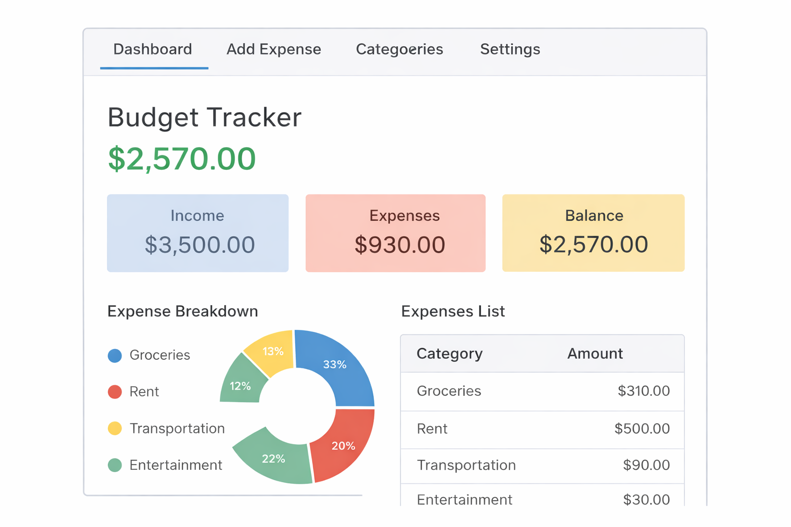

User Interface Plan
This page describes the main pages and user interactions for Budget Buddy. The UI will be built
using HTML and CSS, with forms for CRUD operations.
User Interface Sketch

Initial wireframe showing the Budget Buddy dashboard layout, including balance overview,
expense categories, and transaction list.
Main Pages
1) Dashboard
- Shows summary: total income, total expenses, remaining balance.
- Shows recent transactions list.
- Shows budget progress per category (simple bars or text).
- Buttons/links to add new transaction and manage budgets.
2) Transactions Page
- List all transactions (filter by month/category optional).
- Create transaction (form).
- Edit transaction (form).
- Delete transaction (button/link).
3) Budgets Page
- List budgets for the selected month.
- Create budget (choose category + monthly limit).
- Edit budget.
- Delete budget.
4) Categories Page (optional)
- List categories.
- Add/edit/delete categories (optional if categories are fixed).
Key User Actions (CRUD)
- Create: add transactions and budgets.
- Read: view dashboards and lists.
- Update: edit transaction details and budget limits.
- Delete: remove transactions and budgets.